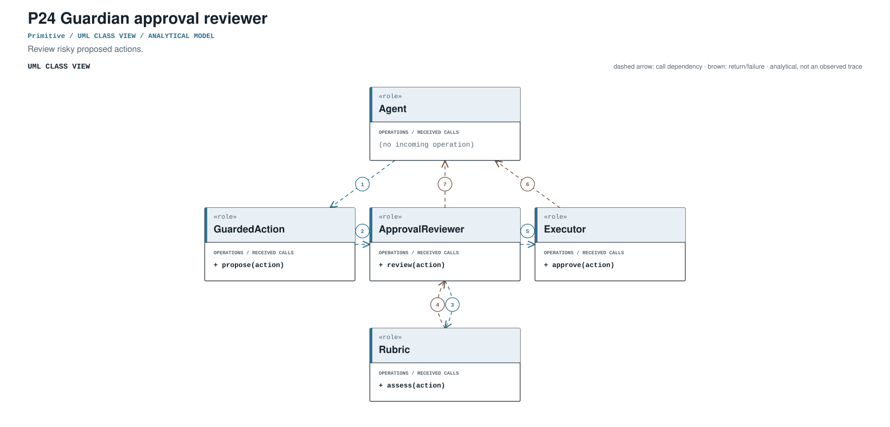
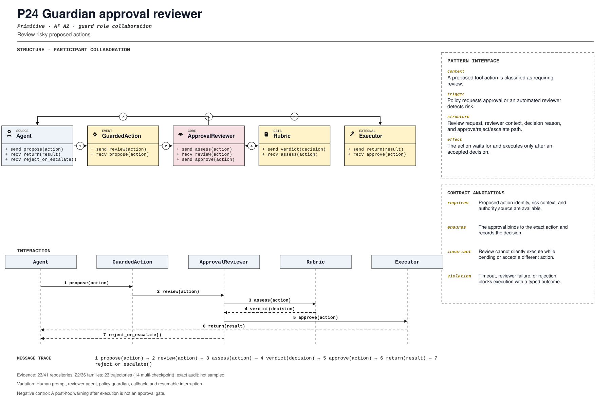

PROMPT SKETCH
Escalate risky actions to a reviewer with the exact action identity and risk context. Bind the approval to that action hash, record the decision, and resume only the approved call.Review risky proposed actions.
risky_action_escalationRECORD STATUSCandidate · v0.1.0The proposed contract drawn as participant roles, received calls, and numbered dependencies.

The same roles and calls as a class collaboration and a numbered message sequence.

Where the mechanism applies. All four dimensions belong to the proposed match, not just its vocabulary.
The obligation that clients, operators, and auditors should be able to rely on.
A post-hoc warning after execution is not an approval gate.
The hot spot is admitted only where the protected semantics survive.
Human prompt, reviewer agent, policy guardian, callback, and resumable interruption.
Test approve, reject, timeout, altered arguments, nested action, and bypass.
Did confirmation evolve into action-bound interruption and resumption?
An illustrative prompt and a small design sketch for the proposed contract. Names and APIs are invented; this is not a repository excerpt.
Escalate risky actions to a reviewer with the exact action identity and risk context. Bind the approval to that action hash, record the decision, and resume only the approved call.def escalate(action, reviewer):
ticket = reviewer.request(
action_hash=action.digest(),
context=action.risk_context(),
authority=action.authority,
)
if ticket.decision != "approved":
return Denied(action, ticket.reason)
if ticket.action_hash != action.digest():
return Denied(action, "approval bound to different action")
return action.execute()Illustrative design sketch. Approval must name the action; a blanket yes is not an authorization record. This example is a teaching aid, not implementation evidence or a conformance claim.
The frozen rule that retrieves this record, the canonical source exemplar, and the control that should stay unmatched.
risky_action_escalation(?i)\b(?:guardian|approval[_-]?(?:request|callback|handler)|review[_-]?action|human[_-]?approval)\bFrozen expression, v0.1.0. A match is a retrieval cue, not a confirmed implementation.src/agents/tool.py:1498Support: tests/test_function_tool_approval_arguments.py:1Up to five public files retrieved by the frozen cue and pinned to the audited commit. A match is a place to inspect, not a confirmed implementation.
src/agents/tool.py:1498CANONICAL SOURCE02aaif-goose/goosecrates/goose/src/agents/state_machine/tool_approval.rs:97RETRIEVAL CUE03anomalyco/opencodepackages/core/src/aisdk.ts:752RETRIEVAL CUE04cline/clinesdk/packages/core/src/hub/runtime-host/hub-runtime-host.ts:1769RETRIEVAL CUE05Darwin-Agent/HarnessXharnessx/processors/tools/tool_whitelist.py:27RETRIEVAL CUEEach layer answers a different question. Do not substitute retrieval for review.
A concrete source anchor is available for this proposed record. It is one exemplar, not evidence that all repositories—or every contract field—conform.
Review boundary: this candidate and its specification come from an AI-assisted study. Independent human validation remains open.
61.1% of repository families in the frozen panel have at least one current cue, historical cue, or canonical source layer. This is not confirmed prevalence.
Current lexical-cue repositories: 21 / 4186bd29878b30src/agents/tool.py:1498tests/test_function_tool_approval_arguments.py:1Tool approval interruption and on-approval handler.
(?i)\b(?:guardian|approval[_-]?(?:request|callback|handler)|review[_-]?action|human[_-]?approval)\bThis expression is a discovery instrument only. A match is a retrieval cue—not a confirmed implementation, pointcut match, or contract proof.